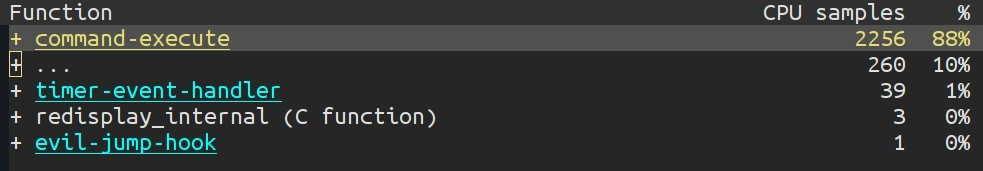
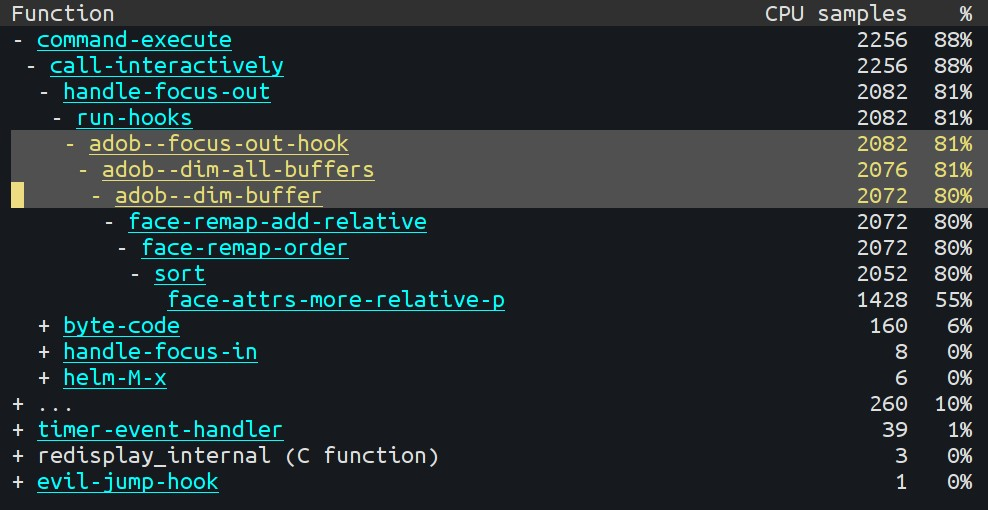

(map reflect shtuff)
=> ramblings by Ahmad Nazir
Emacs keeps running for several days on my machine and from time to time I notice that it starts to get slow. I recently found a very easy way to debug a slow emacs instance i.e. using the emacs profiler.
M-x profiler-startYou need to specify what is it that needs to be profiled i.e. cpu, memory or both. Once the profiler is active, you need to perform the operations that cause the delay. In my case, switching the focus in and out of emacs was causing a delay. So, I just changed the focus a couple of times so that the profiler could record the actions.
M-x profiler-reportThis gave me a detailed overview such as:

By expanding each item (default key for expand/collapse is TAB), further split can be seen:

Clearly, I could see that the culprit was a hook that ran everytime I was changing the focus. It turned out that the auto-dim-other-buffers-mode was causing the problems. Disabling and re-enabling the mode fixed the problem. Though this didn’t fix the root cause of the problem but the profiler helped me point out what was the source of the problem.